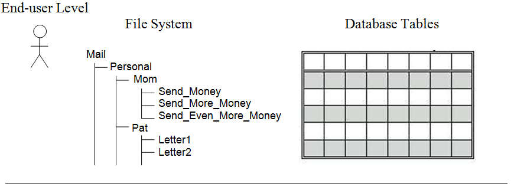
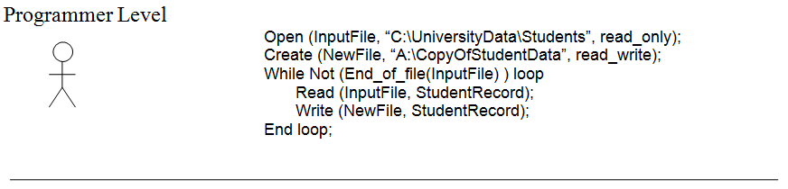
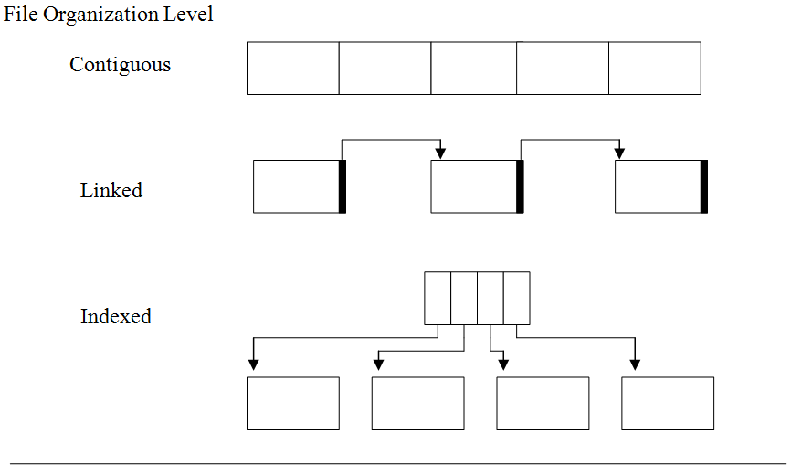
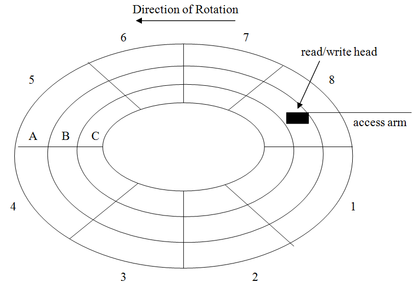

A disk drive is an electromechanical device for storing and retrieving data. Disk drives contain one or more disks, which are platters that rotate inside the drive unit. These platters are coated with a special magnetic material that allows information to be recorded on the disk by manipulating the orientation of the magnetic fields on the surface of the platter. Data stored on a disk is said to be in a non-volatile form, meaning it will not be lost when power to the drive is turned off.
  Four views of information storage and retrieval
Almost all disk drives these days are hard disk drives that consist of a sealed unit that contains one or more rigid metallic disk platters that spin at a high rate of speed. You may occasionally run across an older type of disk drive, known as a floppy disk drive. Floppy disk drives were similar to hard drives but stored data on a single removable diskette that was spun at a much lower rate of speed than hard drive platters. A diskette, or “floppy disk” as it was sometimes called, consisted of a single flexible platter (made of thin plastic covered with a magnetic material) encased in a hard plastic shell. A diskette could hold a maximum of 1.44 megabytes of data, or about 1.5 million characters. Floppy disks had their heyday in the 1990’s.
The platters inside a hard disk drive spin at a much higher rate of speed than floppy disks – typically at either 5,400 or 7,200 RPM (Revolutions Per Minute). The result is that hard drives can hold many times the information of floppy drives and access that information much faster. For example, in 2012 an entry-level hard drive had a capacity of about 500 gigabytes, which is about 350,000 times the capacity of a 1.44 megabyte floppy drive, or approximately 500 billion characters.
Regardless of whether a disk is hard or floppy, it will be divided into tracks and sectors. Tracks are concentric circles, kind of like the rings of a tree, onto which data may be written. Each track is divided into a number of equal sized regions known as sectors. Sectors are the smallest addressable unit on a disk drive. Data is both written to and read from disk drives an entire sector at a time.
The organization of a disk drive
contains an illustration of the organization of a disk drive. This particular disk spins in a counter-clockwise direction and has three tracks; the outermost track is labeled A, the middle track is labeled B, and the innermost track is labeled C. Each track contains eight sectors, labeled 1 through 8. Hence, this disk contains a total of 24 sectors.
In order to access information at this level, one needs to know the track and sector number that specifies where the data is to be read from or written to the disk (e.g., Track B, Sector 8). This track and sector information is sent to the disk drive “controller,” which oversees the actual input or output operation.
Real disk drives contain many more tracks per disk platter and many more sectors per track than illustrated in , but this diagram illustrates the basic organization of a drive. Note that while all of the sectors on a particular track are of the same size, the size of a sector varies from track to track, with the size of the sectors on the innermost track being substantially smaller than the sectors on the outermost track. Regardless of this fact, each sector of a disk holds the same amount of data – to accomplish this feat; data is written more densely on the smaller, inner tracks than on the larger, outer tracks.
In addition to the disk platter itself, drive units contain a mobile access arm. The access arm is a mechanical device that can move back and forth (left and right in the diagram) over the disk. At the end of the access arm is a small electromagnetic device called a read/write head which, as its name implies, is capable of either reading data from, or writing data to, the disk.
Although this set up is the same for both floppy drives and hard drives, one difference between the two involves how the read/write head and disk surface interact. On floppy disk drives, the read/write head was in physical contact with the surface of the disk. On hard disk drives, the head floats on a layer of air just slightly above the disk surface but close enough (less than the diameter of a human hair) to still pick up the magnetic impulses. This requirement for the read/write head of a floppy disk drive to be in physical contact with the disk platter was one of the reasons why floppy disks were slower and much less reliable than hard disk drives.
You may have heard of the phrase “head crash” used to describe a type of problem that can occur with hard disk drives. A head crash occurs when the read/write head of a hard drive actually comes into contact with the disk and thereby damages the surface of the platter. Head crashes are very serious problems, which can destroy a drive and its data. Thankfully, these types of problems rarely occur on modern hard drives.
The process of reading, or writing, a particular sector of a disk consists of moving the access arm so that the read/write head is placed over the track which contains the sector of interest, then waiting for that sector to rotate under the read/write head, and finally either detecting the magnetic fields representing the data (in the case of reading) or recording new magnetic fields (in the case of writing). This process results in three types of delays, or latencies, when reading or writing data to a disk drive:
• seek time – The amount of time required to move the read/write head over to the appropriate track.
• rotational latency – The time required for the start of the desired sector to rotate underneath the read/write head once the head reaches the proper track.
• transfer time – The time required to transfer the data from the disk sector to the computer’s main memory during a read (or from the computer’s main memory to the disk sector during a write). The limiting factor in this delay is the time it takes for the complete sector to rotate past the read/write head.
The actual time to access a particular piece of information will depend on the number of tracks the access arm has to move across and the position of the desired sector relative to the read/write head once the desired track is reached. Average disk access time can be computed as the sum of the averages of each of the three delays.
Avg. Disk Access Time = Avg. Seek Time + Avg. Rotational Latency + Avg. Transfer Time
Of these three delays, average seek time tends to be the largest (about 10 milliseconds) and average rotational latency the next largest (about 5 milliseconds). Transfer time is usually quite small in comparison to the other two. Thus a hard drive on a modern PC can usually perform an I/O operation in under 20 milliseconds (0.02 seconds). Although this may seem very fast to a human, it is quite slow compared to a CPU capable of processing billions of instructions per second. In fact, I/O (Input/Output) is the single largest bottleneck in computing speed.